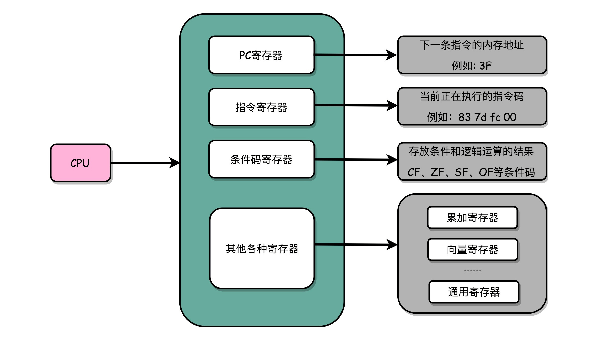
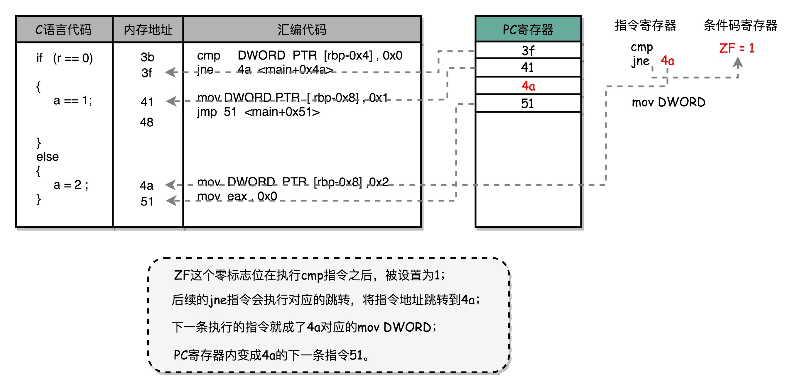
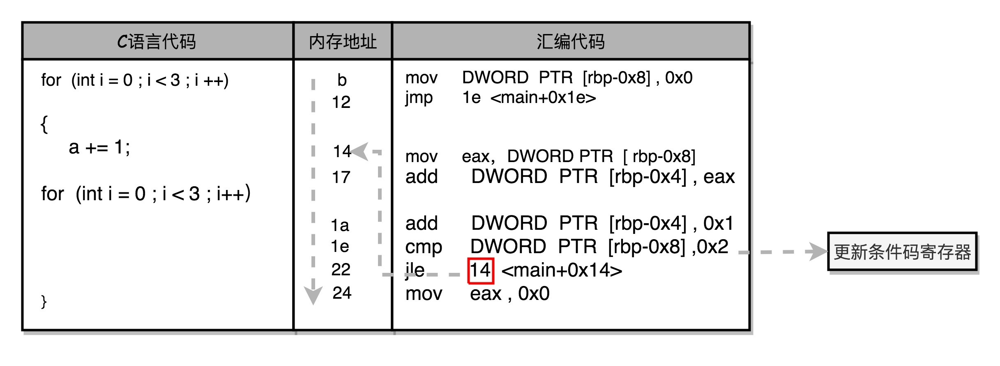

- 00 开篇词 为什么你需要学习计算机组成原理？.md.html
- 01 冯·诺依曼体系结构：计算机组成的金字塔.md.html
- 02 给你一张知识地图，计算机组成原理应该这么学.md.html
- 03 通过你的CPU主频，我们来谈谈“性能”究竟是什么？.md.html
- 04 穿越功耗墙，我们该从哪些方面提升“性能”？.md.html
- 05 计算机指令：让我们试试用纸带编程.md.html
- 06 指令跳转：原来if...else就是goto.md.html
- 07 函数调用：为什么会发生stack overflow？.md.html
- 08 ELF和静态链接：为什么程序无法同时在Linux和Windows下运行？.md.html
- 09 程序装载：“640K内存”真的不够用么？.md.html
- 10 动态链接：程序内部的“共享单车”.md.html
- 11 二进制编码：“手持两把锟斤拷，口中疾呼烫烫烫”？.md.html
- 12 理解电路：从电报机到门电路，我们如何做到“千里传信”？.md.html
- 13 加法器：如何像搭乐高一样搭电路（上）？.md.html
- 14 乘法器：如何像搭乐高一样搭电路（下）？.md.html
- 15 浮点数和定点数（上）：怎么用有限的Bit表示尽可能多的信息？.md.html
- 16 浮点数和定点数（下）：深入理解浮点数到底有什么用？.md.html
- 17 建立数据通路（上）：指令加运算=CPU.md.html
- 18 建立数据通路（中）：指令加运算=CPU.md.html
- 19 建立数据通路（下）：指令加运算=CPU.md.html
- 20 面向流水线的指令设计（上）：一心多用的现代CPU.md.html
- 21 面向流水线的指令设计（下）：奔腾4是怎么失败的？.md.html
- 22 冒险和预测（一）：hazard是“危”也是“机”.md.html
- 23 冒险和预测（二）：流水线里的接力赛.md.html
- 24 冒险和预测（三）：CPU里的“线程池”.md.html
- 25 冒险和预测（四）：今天下雨了，明天还会下雨么？.md.html
- 26 Superscalar和VLIW：如何让CPU的吞吐率超过1？.md.html
- 27 SIMD：如何加速矩阵乘法？.md.html
- 28 异常和中断：程序出错了怎么办？.md.html
- 29 CISC和RISC：为什么手机芯片都是ARM？.md.html
- 30 GPU（上）：为什么玩游戏需要使用GPU？.md.html
- 31 GPU（下）：为什么深度学习需要使用GPU？.md.html
- 32 FPGA、ASIC和TPU（上）：计算机体系结构的黄金时代.md.html
- 33 解读TPU：设计和拆解一块ASIC芯片.md.html
- 34 理解虚拟机：你在云上拿到的计算机是什么样的？.md.html
- 35 存储器层次结构全景：数据存储的大金字塔长什么样？.md.html
- 36 局部性原理：数据库性能跟不上，加个缓存就好了？.md.html
- 37 理解CPU Cache（上）：“4毫秒”究竟值多少钱？.md.html
- 38 高速缓存（下）：你确定你的数据更新了么？.md.html
- 39 MESI协议：如何让多核CPU的高速缓存保持一致？.md.html
- 40 理解内存（上）：虚拟内存和内存保护是什么？.md.html
- 41 理解内存（下）：解析TLB和内存保护.md.html
- 42 总线：计算机内部的高速公路.md.html
- 43 输入输出设备：我们并不是只能用灯泡显示“0”和“1”.md.html
- 44 理解IO_WAIT：IO性能到底是怎么回事儿？.md.html
- 45 机械硬盘：Google早期用过的“黑科技”.md.html
- 46 SSD硬盘（上）：如何完成性能优化的KPI？.md.html
- 47 SSD硬盘（下）：如何完成性能优化的KPI？.md.html
- 48 DMA：为什么Kafka这么快？.md.html
- 49 数据完整性（上）：硬件坏了怎么办？.md.html
- 50 数据完整性（下）：如何还原犯罪现场？.md.html
- 51 分布式计算：如果所有人的大脑都联网会怎样？.md.html
- 52 设计大型DMP系统（上）：MongoDB并不是什么灵丹妙药.md.html
- 53 设计大型DMP系统（下）：SSD拯救了所有的DBA.md.html
- 54 理解Disruptor（上）：带你体会CPU高速缓存的风驰电掣.md.html
- 55 理解Disruptor（下）：不需要换挡和踩刹车的CPU，有多快？.md.html
- 结束语 知也无涯，愿你也享受发现的乐趣.md.html
06 指令跳转：原来if...else就是goto
上一讲，我们讲解了一行代码是怎么变成计算机指令的。你平时写的程序中，肯定不只有 int a = 1 这样最最简单的代码或者指令。我们总是要用到 if…else 这样的条件判断语句、while 和 for 这样的循环语句，还有函数或者过程调用。
对应的，CPU 执行的也不只是一条指令，一般一个程序包含很多条指令。因为有 if…else、for 这样的条件和循环存在，这些指令也不会一路平铺直叙地执行下去。
今天我们就在上一节的基础上来看看，一个计算机程序是怎么被分解成一条条指令来执行的。
CPU 是如何执行指令的？
拿我们用的 Intel CPU 来说，里面差不多有几百亿个晶体管。实际上，一条条计算机指令执行起来非常复杂。好在 CPU 在软件层面已经为我们做好了封装。对于我们这些做软件的程序员来说，我们只要知道，写好的代码变成了指令之后，是一条一条顺序执行的就可以了。
我们先不管几百亿的晶体管的背后是怎么通过电路运转起来的，逻辑上，我们可以认为，CPU 其实就是由一堆寄存器组成的。而寄存器就是 CPU 内部，由多个触发器（Flip-Flop）或者锁存器（Latches）组成的简单电路。
触发器和锁存器，其实就是两种不同原理的数字电路组成的逻辑门。这块内容并不是我们这节课的重点，所以你只要了解就好。如果想要深入学习的话，你可以学习数字电路的相关课程，这里我们不深入探讨。
好了，现在我们接着前面说。N 个触发器或者锁存器，就可以组成一个 N 位（Bit）的寄存器，能够保存 N 位的数据。比方说，我们用的 64 位 Intel 服务器，寄存器就是 64 位的。

一个 CPU 里面会有很多种不同功能的寄存器。我这里给你介绍三种比较特殊的。
一个是PC 寄存器（Program Counter Register），我们也叫指令地址寄存器（Instruction Address Register）。顾名思义，它就是用来存放下一条需要执行的计算机指令的内存地址。
第二个是指令寄存器（Instruction Register），用来存放当前正在执行的指令。
第三个是条件码寄存器（Status Register），用里面的一个一个标记位（Flag），存放 CPU 进行算术或者逻辑计算的结果。
除了这些特殊的寄存器，CPU 里面还有更多用来存储数据和内存地址的寄存器。这样的寄存器通常一类里面不止一个。我们通常根据存放的数据内容来给它们取名字，比如整数寄存器、浮点数寄存器、向量寄存器和地址寄存器等等。有些寄存器既可以存放数据，又能存放地址，我们就叫它通用寄存器。
实际上，一个程序执行的时候，CPU 会根据 PC 寄存器里的地址，从内存里面把需要执行的指令读取到指令寄存器里面执行，然后根据指令长度自增，开始顺序读取下一条指令。可以看到，一个程序的一条条指令，在内存里面是连续保存的，也会一条条顺序加载。
而有些特殊指令，比如上一讲我们讲到 J 类指令，也就是跳转指令，会修改 PC 寄存器里面的地址值。这样，下一条要执行的指令就不是从内存里面顺序加载的了。事实上，这些跳转指令的存在，也是我们可以在写程序的时候，使用 if…else 条件语句和 while/for 循环语句的原因。
从 if…else 来看程序的执行和跳转
我们现在就来看一个包含 if…else 的简单程序。
// test.c
#include <time.h>
#include <stdlib.h>
int main()
{
srand(time(NULL));
int r = rand() % 2;
int a = 10;
if (r == 0)
{
a = 1;
} else {
a = 2;
}
我们用 rand 生成了一个随机数 r，r 要么是 0，要么是 1。当 r 是 0 的时候，我们把之前定义的变量 a 设成 1，不然就设成 2。
$ gcc -g -c test.c
$ objdump -d -M intel -S test.o
我们把这个程序编译成汇编代码。你可以忽略前后无关的代码，只关注于这里的 if…else 条件判断语句。对应的汇编代码是这样的：
if (r == 0)
3b: 83 7d fc 00 cmp DWORD PTR [rbp-0x4],0x0
3f: 75 09 jne 4a <main+0x4a>
{
a = 1;
41: c7 45 f8 01 00 00 00 mov DWORD PTR [rbp-0x8],0x1
48: eb 07 jmp 51 <main+0x51>
}
else
{
a = 2;
4a: c7 45 f8 02 00 00 00 mov DWORD PTR [rbp-0x8],0x2
51: b8 00 00 00 00 mov eax,0x0
}
可以看到，这里对于 r == 0 的条件判断，被编译成了 cmp 和 jne 这两条指令。
cmp 指令比较了前后两个操作数的值，这里的 DWORD PTR 代表操作的数据类型是 32 位的整数，而 [rbp-0x4] 则是一个寄存器的地址。所以，第一个操作数就是从寄存器里拿到的变量 r 的值。第二个操作数 0x0 就是我们设定的常量 0 的 16 进制表示。cmp 指令的比较结果，会存入到条件码寄存器当中去。
在这里，如果比较的结果是 True，也就是 r == 0，就把零标志条件码（对应的条件码是 ZF，Zero Flag）设置为 1。除了零标志之外，Intel 的 CPU 下还有进位标志（CF，Carry Flag）、符号标志（SF，Sign Flag）以及溢出标志（OF，Overflow Flag），用在不同的判断条件下。
cmp 指令执行完成之后，PC 寄存器会自动自增，开始执行下一条 jne 的指令。
跟着的 jne 指令，是 jump if not equal 的意思，它会查看对应的零标志位。如果为 0，会跳转到后面跟着的操作数 4a 的位置。这个 4a，对应这里汇编代码的行号，也就是上面设置的 else 条件里的第一条指令。当跳转发生的时候，PC 寄存器就不再是自增变成下一条指令的地址，而是被直接设置成这里的 4a 这个地址。这个时候，CPU 再把 4a 地址里的指令加载到指令寄存器中来执行。
跳转到执行地址为 4a 的指令，实际是一条 mov 指令，第一个操作数和前面的 cmp 指令一样，是另一个 32 位整型的寄存器地址，以及对应的 2 的 16 进制值 0x2。mov 指令把 2 设置到对应的寄存器里去，相当于一个赋值操作。然后，PC 寄存器里的值继续自增，执行下一条 mov 指令。
这条 mov 指令的第一个操作数 eax，代表累加寄存器，第二个操作数 0x0 则是 16 进制的 0 的表示。这条指令其实没有实际的作用，它的作用是一个占位符。我们回过头去看前面的 if 条件，如果满足的话，在赋值的 mov 指令执行完成之后，有一个 jmp 的无条件跳转指令。跳转的地址就是这一行的地址 51。我们的 main 函数没有设定返回值，而 mov eax, 0x0 其实就是给 main 函数生成了一个默认的为 0 的返回值到累加器里面。if 条件里面的内容执行完成之后也会跳转到这里，和 else 里的内容结束之后的位置是一样的。

上一讲我们讲打孔卡的时候说到，读取打孔卡的机器会顺序地一段一段地读取指令，然后执行。执行完一条指令，它会自动地顺序读取下一条指令。如果执行的当前指令带有跳转的地址，比如往后跳 10 个指令，那么机器会自动将卡片带往后移动 10 个指令的位置，再来执行指令。同样的，机器也能向前移动，去读取之前已经执行过的指令。这也就是我们的 while/for 循环实现的原理。
如何通过 if…else 和 goto 来实现循环？
int main()
{
int a = 0;
for (int i = 0; i < 3; i++)
{
a += i;
}
}
我们再看一段简单的利用 for 循环的程序。我们循环自增变量 i 三次，三次之后，i>=3，就会跳出循环。整个程序，对应的 Intel 汇编代码就是这样的：
for (int i = 0; i < 3; i++)
b: c7 45 f8 00 00 00 00 mov DWORD PTR [rbp-0x8],0x0
12: eb 0a jmp 1e <main+0x1e>
{
a += i;
14: 8b 45 f8 mov eax,DWORD PTR [rbp-0x8]
17: 01 45 fc add DWORD PTR [rbp-0x4],eax
for (int i = 0; i < 3; i++)
1a: 83 45 f8 01 add DWORD PTR [rbp-0x8],0x1
1e: 83 7d f8 02 cmp DWORD PTR [rbp-0x8],0x2
22: 7e f0 jle 14 <main+0x14>
24: b8 00 00 00 00 mov eax,0x0
}
可以看到，对应的循环也是用 1e 这个地址上的 cmp 比较指令，和紧接着的 jle 条件跳转指令来实现的。主要的差别在于，这里的 jle 跳转的地址，在这条指令之前的地址 14，而非 if…else 编译出来的跳转指令之后。往前跳转使得条件满足的时候，PC 寄存器会把指令地址设置到之前执行过的指令位置，重新执行之前执行过的指令，直到条件不满足，顺序往下执行 jle 之后的指令，整个循环才结束。

如果你看一长条打孔卡的话，就会看到卡片往后移动一段，执行了之后，又反向移动，去重新执行前面的指令。
其实，你有没有觉得，jle 和 jmp 指令，有点像程序语言里面的 goto 命令，直接指定了一个特定条件下的跳转位置。虽然我们在用高级语言开发程序的时候反对使用 goto，但是实际在机器指令层面，无论是 if…else…也好，还是 for/while 也好，都是用和 goto 相同的跳转到特定指令位置的方式来实现的。
总结延伸
这一节，我们在单条指令的基础上，学习了程序里的多条指令，究竟是怎么样一条一条被执行的。除了简单地通过 PC 寄存器自增的方式顺序执行外，条件码寄存器会记录下当前执行指令的条件判断状态，然后通过跳转指令读取对应的条件码，修改 PC 寄存器内的下一条指令的地址，最终实现 if…else 以及 for/while 这样的程序控制流程。
你会发现，虽然我们可以用高级语言，可以用不同的语法，比如 if…else 这样的条件分支，或者 while/for 这样的循环方式，来实现不用的程序运行流程，但是回归到计算机可以识别的机器指令级别，其实都只是一个简单的地址跳转而已，也就是一个类似于 goto 的语句。
想要在硬件层面实现这个 goto 语句，除了本身需要用来保存下一条指令地址，以及当前正要执行指令的 PC 寄存器、指令寄存器外，我们只需要再增加一个条件码寄存器，来保留条件判断的状态。这样简简单单的三个寄存器，就可以实现条件判断和循环重复执行代码的功能。
下一节，我们会进一步讲解，如果程序中出现函数或者过程这样可以复用的代码模块，对应的指令是怎么样执行的，会和我们这里的 if…else 有什么不同。
推荐阅读
《深入理解计算机系统》的第 3 章，详细讲解了 C 语言和 Intel CPU 的汇编语言以及指令的对应关系，以及 Intel CPU 的各种寄存器和指令集。
Intel 指令集相对于之前的 MIPS 指令集要复杂一些，一方面，所有的指令是变长的，从 1 个字节到 15 个字节不等；另一方面，即使是汇编代码，还有很多针对操作数据的长度不同有不同的后缀。我在这里没有详细解释各个指令的含义，如果你对用 C/C++ 做 Linux 系统层面开发感兴趣，建议你一定好好读一读这一章节。